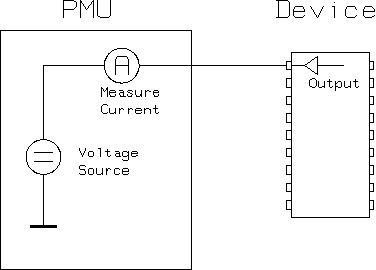

HighZ
This test method measures the leakage current at DUT output pins in high-impedance (high-z) state by forcing a specified voltage.
To bring these pins into high-z state the active pattern is executed before the measurement.

If not already connected, the test system is set to the CONNECTED state, with the AC relays closed, the sequencer set to BREAK and the DPS set to the voltage programmed in Level Setup.
The measured pins must then be brought into the desired condition - that is high-z. For this purpose the test method runs the sequencer from the label specified in the test suite before execution of the high-z measurement.
The actual dc measurement must be carried out with the measured pins in a stable condition. The test system achieves this by applying a break waveform to the device after the sequencer stops. Again, you have to make sure the break waveform is set to keep the device in a stable condition during the measurement.
This test method allows you to measure the current on individual pins in parallel.
The test system opens the AC relay of the measuring channel, and closes the PPMU relay thus connecting the PPMU directly to the measured DUT pin. The PPMU applies the specified force voltage at the pin and measures the current flow into or out of the pin. This is done for each pin in the pinlist in parallel.
You can perform a pass/fail measurement per pin, or per pinlist or a value measurement per pin. The execution mode is determined by the related test suite flags. If the flag Pass value or Fail value is on, the per-pin value measurement will be done. If the flag Pass value and Fail value are off and the flag Per pin on pass or Per pin on fail is on, the per-pin pass/fail measurement will be done. Otherwise, the global pass/fail measurement will be done.
If the functional pre-test fails, the test suite will always fail regardless of the p/f results per pin (pinlist) or value results per pin. The p/f results per pin (pinlist) or the value results per pin reflect only the result of the PMU measurement.
For example, you select p/f per pin for the result evaluation and a pass is given back for all pins. However, the result of the test suite will still be a fail (red border) if the functional pretest has failed
This test method supports test table. But you need to enter the test names manually in the parameter. You can use both test table and testflow limits in a testflow. The test table has higher priority than testflow limits. If a test name used in the test flow is defined in both test table and testflow limits, the value defined in the test table will be used.
Parameter |
Type |
Description |
|---|---|---|
pinlist |
PinString |
pins to be tested This can be @ for all applicable pins, or any number of applicable single pins. Valid pin types include: O or IO. |
forceVoltage |
SpecValue |
value of force voltage. It is in the format of value[unit]. Default value is 2500[mV]. |
settlingTime |
SpecValue |
value of settling time The settling time will be in addition to the settling time calculated by the system. It is in the format of value[unit]. Default value is 0[ms]. |
relaySwitchMode |
string |
relay switching mode, used in case of no termination BBM - break before measurement (open AC relay, then close PMU relay). MBB - measure before break (close PMU relay, then open AC relay). PARALLEL - open AC relay and close PMU relay in parallel. |
testName |
string |
The test names to be used as limits. Default is If you want to use the test names defined in the test table or testflow limits, type in the test names manually. Make sure the test names are in the Test name column of the test table (Refer to Structure of a TMLimits CSV file) or in the Test Name column of Tests page of Flow Data Editor. |
output |
string |
Controls how to output the per pin test result. It can be:
ShowFailOnly: Only outputs the failed pin result to the report window. |
Limits
passCurrent_uA |
The pass range of the measured leakage current |
Implementation pseudo code
IF not already connected THEN connect DUT ENDIF execute a functional test with sequencer state "ACFF" mode program PPMU with specified conditions execute measurement datalog test result
Functional changes
- Introduced before SmarTest 6.3.2
- SmarTest 6.5.0: Change parameter type of pinlist to PinString for UTM library.
- SmarTest 6.5.2: Change parameter type of forcevoltage and settlingTime to SpecValue for UTM library.
- SmarTest 7.0.3: Classic test method library is removed.
- SmarTest 7.1.1: Test table is supported in TML 2.1.1.
- SmarTest 7.1.1: Mixed usage of test table and testflow limits in one testflow is supported in TML 2.1.1.
- SmarTest 7.1.1: New parameter testName is added in TML 2.1.1.
- SmarTest 7.2.1: New option ShowFailOnly for the parameter output in TML 2.2.0.